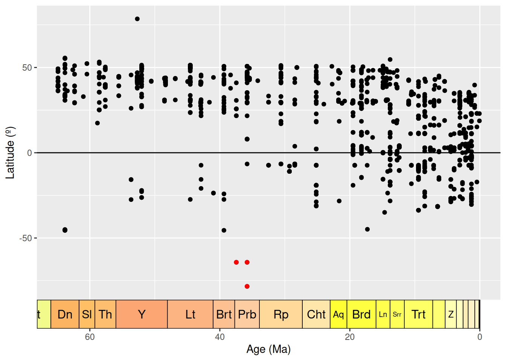
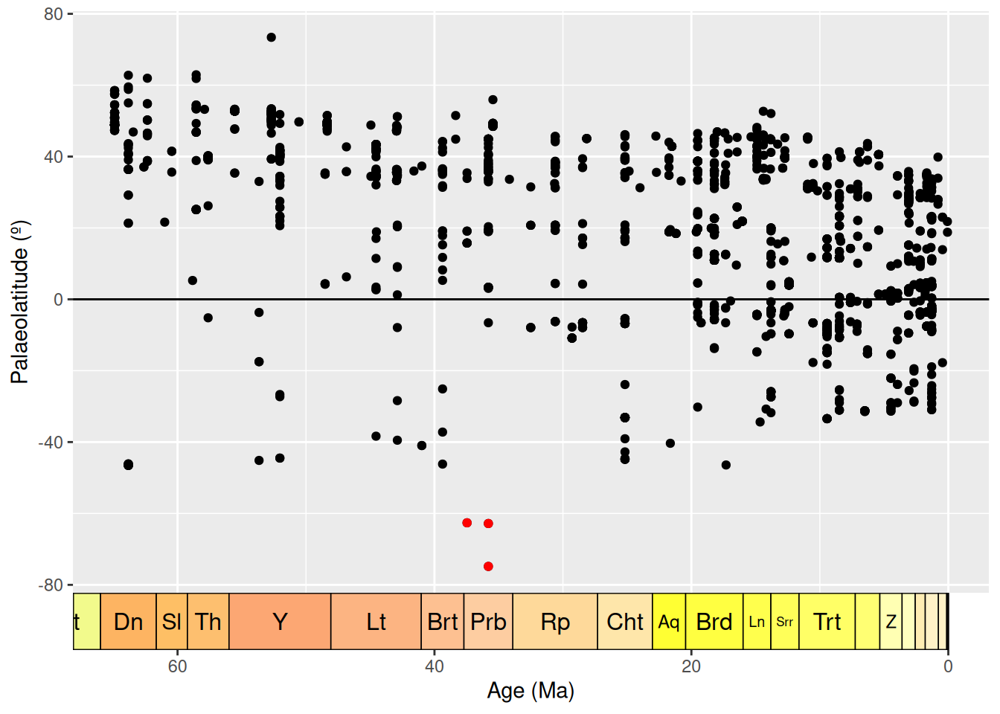
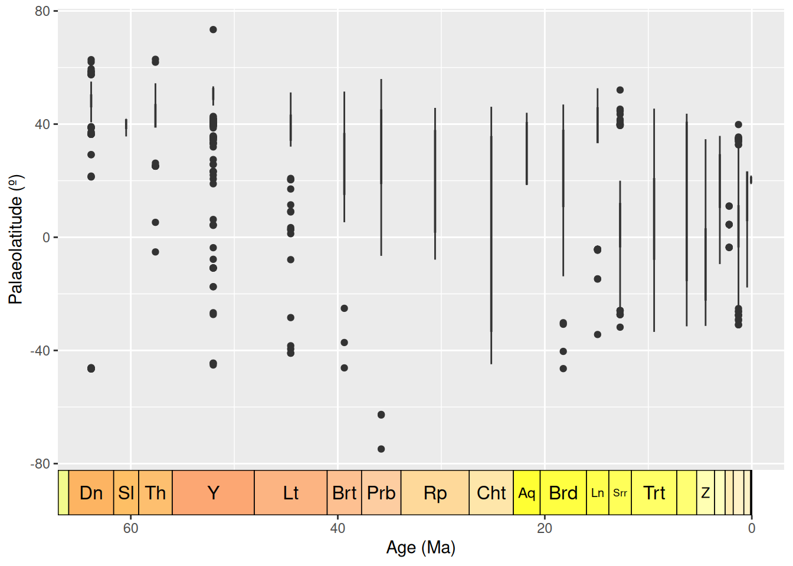
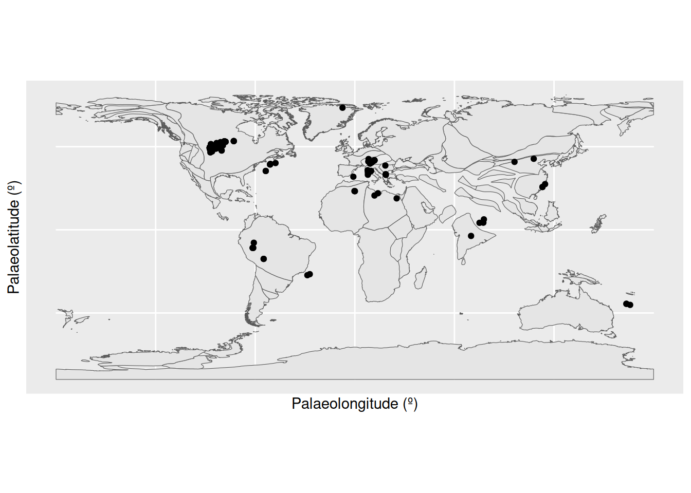
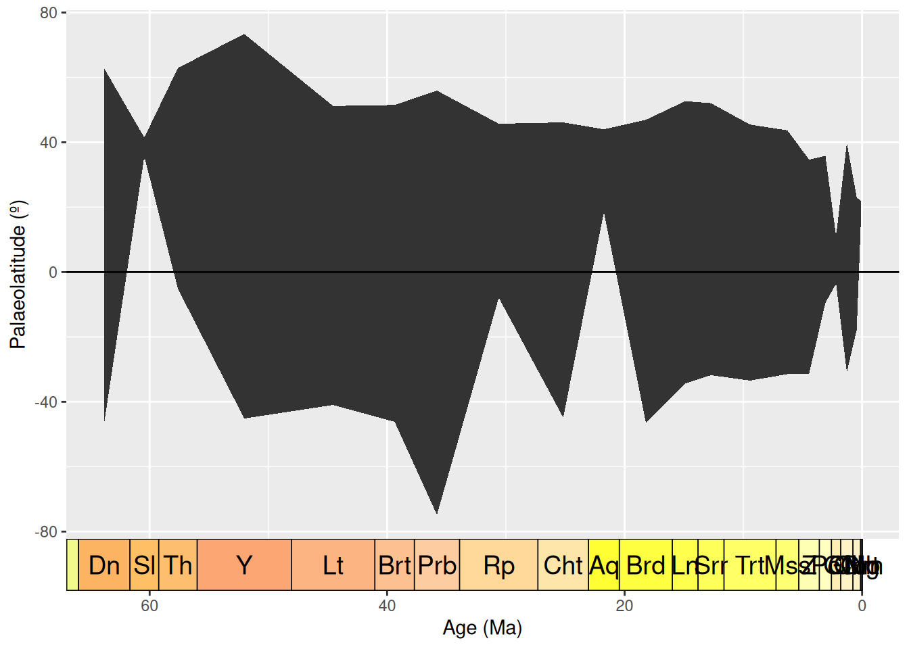

# install.packages("dplyr")
# install.packages("palaeoverse")
# install.packages("ggplot2")
# install.packages("rnaturalearth")
# install.packages("rnaturalearthdata")
# install.packages("deeptime")
# install.packages("rgplates")
# install.packages("fossilbrush")
library(dplyr)
library(palaeoverse)
library(ggplot2)
library(rnaturalearth)
library(rnaturalearthdata)
library(deeptime)
library(rgplates)
library(fossilbrush)
# Load data
fossils <- read.csv("cenozoic_crocs.csv")Data Processing I
Data Processing I: Data Exploration and Cleaning
Learning Objectives
In this session, the objectives are to (1) understand why data exploration and cleaning is key for data analyses and (2) develop the skills and knowledge needed to explore and clean data. We will cover:
- Exploratory data analyses
- Identifying and handling incomplete records
- Identifying and handling outliers
- Identifying and handling inconsistencies
- Identifying and handling duplicate records
Schedule
11:15–12:30
Data exploration
Why do we explore our data?
After acquiring the raw data to address your research question, a practical next step is to explore your data. Exploratory data analysis involves using graphical tools and basic statistical techniques to better understand the characteristics of your dataset, identify anomalies, and uncover patterns. This step is important for a variety of reasons:
- Reveal the structure and attributes of your dataset, such as variable types and distributions, numbers of observations, and spatial or temporal dependencies between observations.
- Highlight relationships between variables to guide future analyses and maximise statistical insights.
- Help you select appropriate statistical tools and verify their assumptions to avoid type I (false positive) and II (false negative) errors that might lead to incorrect conclusions.
- Flag systematic biases (e.g. taphonomic or sampling biases) that warrant careful consideration when interpreting your results.
- Reveal missing values, outliers, inconsistencies, duplication, and other unusual or erroneous values that require cleaning.
Together, exploratory data analysis is used to assess the quality and completeness of your dataset and gauge whether it can provide a meaningful and representative sample to address your research question. Without this step, you run the risk of applying inappropriate statistical techniques or making faulty inferences.
How do we explore our data?
Load packages and data
Before we start, we will load the R packages and data we need:
The first thing we want to do with our data is generate summary statistics and plots to help us understand the data and its various characteristics.
For example, we can look at the distribution of identification levels for our fossils.
# Count the frequency of taxonomic ranks
table(fossils$accepted_rank)
family genus species subfamily subgenus
15 625 849 3 1
subspecies superfamily unranked clade
2 30 717 # Calculate as percentages
(table(fossils$accepted_rank) / nrow(fossils)) * 100
family genus species subfamily subgenus
0.66904550 27.87689563 37.86797502 0.13380910 0.04460303
subspecies superfamily unranked clade
0.08920607 1.33809099 31.98037467 We can see that of our 886 occurrences, 849 (~38%) are identified to species level. A further 625 (~28%) are identified to genus level. The remaining fossils are more coarsely identified, including 717 (~32%) which are identified to the mysterious level of “unranked clade”.
Next, let’s look at the distribution of fossils across localities. In the PBDB, fossils are placed within collections, each of which can roughly be considered a separate locality (they can also represent different sampling horizons at the same locality; more on this later). First, we can count the number of unique collection_no values to find out how many unique collections are in the dataset.
# What is the length of a vector of unique collection numbers?
length(unique(fossils$collection_no))[1] 1691Our dataset contains 1691 unique collections.
We can also create a plot showing us the distribution of occurrences across these collections. First let’s tally up the number of occurrences in each collection.
# Count the number of times each collection number appears in the dataset
coll_no_freq <- as.data.frame(table(fossils$collection_no))Next, we’ll use the ggplot2 package, the go-to for professional-looking data visualizations in R, to visualize the frequency of collections with various numbers of occurrences.
# Plot the distribution of number of occurrences per collection
ggplot(coll_no_freq, aes(x = Freq)) +
geom_bar() +
labs(x = "Number of occurrences",
y = "Frequency")
We can see that the collection containing the most occurrences has 15, while the vast majority only contain a single occurrence.
Building ggplot2 visualizations
Let’s take a moment to break down the above ggplot2 code, since we’ll be using the package a lot in the rest of the workshop:
- The first component of any ggplot2 plot is the
ggplot()function, which sets up the plot. The first argument of this function here is the data frame that we want to plot, and the second argument is a set of aesthetic mappings, which define how variables in our data are mapped to visual properties of the plot. In this case, we are mapping theFreqcolumn to the x-axis. - The next component is the
geom_bar()function, which adds a bar plot layer to the ggplot. This function does not require any additional arguments, as it will automatically use the data and x aesthetic mapping defined in theggplot()function. - The final component is the
labs()function, which adds labels to the x and y axes of the plot. This function takes named arguments for each label, allowing us to customize the appearance of the plot. - All of the these components are combined together using the
+operator, allowing us to build up the plot step by step.
We’ll end up using lots of other ggplot2 components moving forward, which we’ll explain when we get to them, but this is the basic structure of a ggplot2 plot. Note that multiple layers (e.g., geom_bar(), geom_point(), etc.) can be added to the same plot, and that the order in which they are added can affect the final appearance of the plot.
You can also modify other aesthetics of the plot, such as the colour, size, and shape of the points, by adding additional arguments to the aes() function (which, by the way, can go within the ggplot function, within geom_ functions, or even on its own). The way these aesthetics are then displayed in the plot can be modified using scale functions (e.g., scale_color_manual(), scale_size_continuous(), etc.).
For more information on how to use ggplot2, check out the ggplot2 documentation.
What about the countries in which these fossils were found? We can investigate this using the “cc”, or “country code” column.
# List unique country codes, and count them
unique(fossils$cc) [1] "US" "NC" "CN" "IN" "CA" "KE" "AU" NA "TD" "TZ" "CD" "ET" "UG" "MW" "DJ"
[16] "ZA" "PA" "FJ" "PE" "FR" "MA" "IT" "TN" "PK" "PG" "BE" "PT" "RU" "AR" "ES"
[31] "UK" "IL" "DE" "IQ" "SA" "LY" "VE" "KZ" "NP" "BR" "MG" "PR" "AT" "JM" "EG"
[46] "TH" "MX" "ID" "AQ" "CH" "CR" "SV" "TW" "NE" "TR" "CZ" "MM" "DK" "SE" "UA"
[61] "PL" "CO" "SK" "GT" "VU" "SC" "JP" "KY" "AE" "CU" "MT" "BS" "VN" "NZ" "OM"
[76] "GR" "ER" "PY" "EH" "DO" "RO" "SD" "ML" "BA" "SN" "MN" "BG" "HU" "LK"length(unique(fossils$cc))[1] 89Here we can see that Paleogene crocodiles have been found in 46 different countries. Let’s sort those values alphabetically to help us find specific countries.
# List and sort unique country codes, and count them
sort(unique(fossils$cc)) [1] "AE" "AQ" "AR" "AT" "AU" "BA" "BE" "BG" "BR" "BS" "CA" "CD" "CH" "CN" "CO"
[16] "CR" "CU" "CZ" "DE" "DJ" "DK" "DO" "EG" "EH" "ER" "ES" "ET" "FJ" "FR" "GR"
[31] "GT" "HU" "ID" "IL" "IN" "IQ" "IT" "JM" "JP" "KE" "KY" "KZ" "LK" "LY" "MA"
[46] "MG" "ML" "MM" "MN" "MT" "MW" "MX" "NC" "NE" "NP" "NZ" "OM" "PA" "PE" "PG"
[61] "PK" "PL" "PR" "PT" "PY" "RO" "RU" "SA" "SC" "SD" "SE" "SK" "SN" "SV" "TD"
[76] "TH" "TN" "TR" "TW" "TZ" "UA" "UG" "UK" "US" "VE" "VN" "VU" "ZA"length(sort(unique(fossils$cc)))[1] 88Something weird has happened here: we can see that once the countries have been sorted, one of them has disappeared. Why? We will come back to this during our data cleaning.
Practical
- Why do we explore our data? How do we explore our data? [20 min instruction & code-along, Will] Based on https://tenrules.palaeoverse.org/#rule-4-explore-your-data Guided freeform practical [15 min, Will]
Data cleaning
Incomplete data records
Datasets are rarely perfect. A common issue you may encounter when exploring your data is ambiguous, incomplete, or missing data entries. These incomplete or missing data records can occur due to various reasons. In some cases, the data truly do not exist or cannot be estimated due to issues relating to taphonomy, collection approaches, or biases in the fossil record. In other cases, discrepancies may arise because data were collected when definitions or contexts differed, such as shifts in geopolitical boundaries and country names over time. Additionally, data may be incomplete for some records, but can be inferred through other available data.
Why is it important?
Missing information can bias the results of palaeobiological studies. Occurrence data are inherently based on the existence of a particular fossil, but missing data associated with that fossil occurrence can also affect analyses that rely on that associated data. For instance, missing temporal or spatial data may prevent you from including occurrences in your temporal or geographic range analyses.
What should we do with incomplete data records?
Depending on your research goals, incomplete entries may either be removed through filtering or addressed through imputation techniques. Data imputation approaches can be used to replace missing data with values modelled on the observed data using various methods. These can range from simple approaches, like replacing missing values with the mean for continuous variables, to more advanced statistical or machine learning techniques. If you do decide to impute missing data, it is essential that this process and its effects on the dataset are clearly justified and documented so that future users of the dataset or analytical results are aware of these decisions. Although missing data can reduce the statistical power of analyses and bias the results, imputing missing values can introduce new biases, potentially also skewing results and interpretations of the examined data.
To decide how to handle missing data, start by identifying the gaps in your dataset, which are often represented by empty entries or ‘NA’. For imputing missing values, numerous methods and tools are available in your coding language of choice, such as missForest, mice, and kNN. Removing missing data can be straightforward when working with small datasets. For manual removal, tools such as spreadsheet software can be sufficient. In R, built-in functions such as complete.cases() and na.omit() quickly identify and remove missing values (caution: this will remove whole rows of data). The tidyr package also provides the drop_na() function for this purpose.
Identify and handle incomplete data records
By default, when we read data tables into R, it recognises empty cells and takes some course of action to manage them. When we use base R functions, such as read.csv(), empty cells are given an NA value (‘not available’) only when the column is considered to contain numerical data. When we use Tidyverse functions, such as readr::read_csv(), all empty cells are given NA values. This is important to bear in mind when we want to find those missing values: here, we have done the latter, so all empty cells are NA.
The extent of incompleteness of the different columns in our dataset is highly variable. For example, the number of NA values for the collection_no is 0.
# Count the number of collection number values for which `is.na()` is TRUE
sum(is.na(fossils$collection_no))[1] 0This is because it is impossible to add an occurrence to the PBDB without putting it in a collection, which must in turn have an identification number.
However, what about genus?
# Count the number of genus IDs for which `is.na()` is TRUE
sum(is.na(fossils$genus))[1] 765What other columns might we want to check?
# Latitude
sum(is.na(fossils$lat))[1] 0# Palaeolatitude
sum(is.na(fossils$paleolat))[1] 234# Geological formations
sum(is.na(fossils$formation))[1] 570# Country code
sum(is.na(fossils$cc))[1] 5OK, so we’ve identified some incomplete data records, what do we do now? We have three options:
- Filter (i.e. remove records)
- Impute (i.e. complete records with substituted values)
- Complete (i.e. complete records with ‘true’ values)
Filter
While all occurrences have present-day coordinates, some are missing palaeocoordinates. We could easily remove these occurrences from the dataset.
# Remove occurrences which are missing palaeocoordinates
fossils <- filter(fossils, !is.na(fossils$paleolng))
# Check whether this has worked
sum(is.na(fossils$paleolng))[1] 0A further option applicable in some cases would be to fill in our missing data. We may be able to interpolate values from the rest of our data, or use additional data sources. For our palaeogeography example above, we could generate our own palaeocoordinates, for example using palaeoverse::palaeorotate().
Impute
Data imputation is the process of replacing missing values in a dataset with substituted values. How might we do this for our formation names?
- We could estimate potential formations by using geographic coordinates to extract formations from a geological map.
- We could evaluate whether any nearby collections of the same age have associated formation names.
However, while a useful technique, data imputation does carry a level of uncertainty and can also bias our analyses. In this example, it might be preferable to trace back to the original literature and try to resolve this issue more robustly if the source material allows.
Complete
So, we’ve gone back to our source material (i.e. the publication the data is from) and we’ve discovered that occurrences from collection 18539 are from the Bone Valley Formation. We can now programmatically update our data. We could also do this manually in spreadsheet software, but through coding, we can track and document all the changes we’ve made to the dataset with ease!
# Add formation name
fossils[which(fossils$collection_no == "18539"), "formation"] <- "Bone Valley Formation"
A word of warning
We identified several data records without country codes. We could quickly filter this data, it’s not that much data after all. But you’ve just remembered something! The country where the collection is located is a compulsory data entry field in the PBDB! What on Earth has gone wrong?
Answer
Any guesses on what the country code for NAmibia is?
R has interpreted Namibia’s country code as a ‘NA’ value.
This is an important illustration of why we should conduct further investigation when any apparent errors arise in the dataset, rather than immediately removing these data points.
Outlier data records
Why is it important?
Outliers are data points that significantly deviate from other values in a dataset. Similar to missing information, outliers can bias the results of palaeobiological studies and can occur due to various reasons, including errors in data collection, measurement, processing, or even just natural variations within the data. For instance, when considering the temporal range of a taxonomic group based on occurrence data, an outlier could represent an issue with data entry (e.g. wrong taxonomic name or age entered) or a hiatus in favourable preservation conditions.
What should we do with outliers?
Identifying and handling outliers is an important part of data preparation and cleaning, and they typically become apparent when conducting exploratory data analysis. For numerical data, a simple box plot can often be useful for identifying outliers where typically the ‘whiskers’ are quantified based on some range of values describing the data, and any points lying outside of this range are plotted as individual outliers. In general, when in doubt, visualise and summarise your data.
But what should we do with outliers once they have been identified? Depends.
- How extreme is the outlier?
- Do we suspect it is an error? Can it be corrected (e.g. going to the source material) or removed?
- Do we have a good reason for retaining the data record for our analyses?
- How does it impact our results?
Identify and handle outliers
To provide an example on identifying and handling outliers, we we will focus in on the specific variables which relate to our scientific question, i.e. the geography of our fossil occurrences. First we’ll plot where the crocodile fossils have been found across the globe: how does this match what we already know from the country codes?
# Load in a world map
world <- ne_countries(scale = "medium", returnclass = "sf")
# Plot the geographic coordinates of each locality over the world map
ggplot(fossils) +
geom_sf(data = world) +
geom_point(aes(x = lng, y = lat),
shape = 21, size = 0.75, colour = "black", fill = "purple3") +
labs(x = "Longitude (º)",
y = "Latitude (º)")
We have a large density of crocodile occurrences in Europe and the western interior of the United States, along with a smattering of occurrences across the other continents. This distribution seems to fit our previous knowledge, that the occurrences are spread across 89 countries. However, the crocodile occurrences in Antarctica seem particularly suspicious: crocodiles need a warm climate, and modern-day Antarctica certainly doesn’t fit this description. Let’s investigate further. We’ll do this by plotting the latitude of the occurrences through time.
# Add a column to the data frame with the midpoint of the fossil ages
fossils <- mutate(fossils, mid_ma = (min_ma + max_ma) / 2)
# Create dataset containing only Antarctic fossils
antarctic <- filter(fossils, cc == "AQ")
# Plot the age of each occurrence against its latitude
ggplot(fossils, aes(x = mid_ma, y = lat)) +
geom_point(colour = "black") +
geom_point(data = antarctic, colour = "red") +
labs(x = "Age (Ma)",
y = "Latitude (º)") +
scale_x_reverse() +
geom_hline(yintercept = 0) +
coord_geo(dat = "stages", expand = TRUE, size = "auto")
Here we can see the latitude of each occurrence, plotted against the temporal midpoint of the collection. We have highlighted our Antarctic occurrences in red - these points are still looking pretty anomalous.
But, wait, we should actually be looking at palaeolatitude instead. Let’s plot that against time.
# Plot the age of each occurrence against its palaeolatitude
ggplot(fossils, aes(x = mid_ma, y = paleolat)) +
geom_point(colour = "black") +
geom_point(data = antarctic, colour = "red") +
labs(x = "Age (Ma)",
y = "Palaeolatitude (º)") +
scale_x_reverse() +
geom_hline(yintercept = 0) +
coord_geo(dat = "stages", expand = TRUE, size = "auto")
Hmm… when we look at palaeolatitude the Antarctic occurrences are even further south. Time to really check out these occurrences. Which collections are they within?
# Find Antarctic collection numbers
unique(antarctic$collection_no)[1] 43030 120887 31173Well, upon further visual inspection using the PBDB website, all appear to be fairly legitimate. However, all three occurrences still appear to be outliers, especially as in the late Eocene temperatures were dropping. What about the taxonomic certainty of these occurrences?
# List taxonomic names associated with Antarctic occurrences
antarctic$identified_name[1] "Crocodilia indet." "Crocodylia indet." "Crocodylia indet."Since all three occurrences are listed as “Crocodylia indet.”, it may make sense to remove them from further analyses anyway.
Let’s investigate if there are any other anomalies or outliers in our data. We’ll bin the occurrences by stage to look for stage-level outliers, using boxplots to show us any anomalous data points.
# Put occurrences into stage bins
bins <- time_bins(scale = "international ages")
fossils <- bin_time(occdf = fossils, bins = bins,
min_ma = "min_ma", max_ma = "max_ma", method = "majority")
# Add interval name labels to occurrences
bins <- select(bins, bin, interval_name)
fossils <- left_join(fossils, bins, by = c("bin_assignment" = "bin"))
# Plot occurrences
ggplot(fossils, aes(x = bin_midpoint, y = paleolat, fill = interval_name)) +
geom_boxplot(show.legend = FALSE) +
labs(x = "Age (Ma)",
y = "Palaeolatitude (º)") +
scale_x_reverse() +
scale_fill_geo("stages") +
coord_geo(dat = "stages", expand = TRUE, size = "auto")
Box plots are a great way to look for outliers, because their calculation automatically includes outlier determination, and any such points can clearly be seen in the graph. At time of writing, the guidance for geom_boxplot() states that “The upper whisker extends from the hinge to the largest value no further than 1.5 * IQR from the hinge (where IQR is the inter-quartile range, or distance between the first and third quartiles). The lower whisker extends from the hinge to the smallest value at most 1.5 * IQR of the hinge. Data beyond the end of the whiskers are called ‘outlying’ points and are plotted individually.” 1.5 times the interquartile range seems a reasonable cut-off for determining outliers, so we will use these plots at face value to identify data points to check.
Here, the Ypresian (“Y”) is looking pretty suspicious - it seems to have a lot of outliers. Let’s plot the Ypresian occurrences on a palaeogeographic map to investigate further.
# Load map of the Ypresian, and identify Ypresian fossils
fossils_y <- fossils %>%
filter(interval_name == "Ypresian")
world_y <- reconstruct("coastlines", model = "PALEOMAP", age = 51.9)
# Plot localities on the Ypresian map
ggplot(fossils_y) +
geom_sf(data = world_y) +
geom_point(aes(x = paleolng, y = paleolat)) +
labs(x = "Palaeolongitude (º)",
y = "Palaeolatitude (º)")
Aha! There is a concentrated cluster of occurrences in the western interior of North America. This high number of occurrences is increasing the weight of data at this palaeolatitude, and narrowing the boundaries at which other points are considered outliers. We can check the effect this is having on our outlier identification by removing the US occurrences from the dataset and checking the distribution again.
# Remove US fossils from the Ypresian dataset
fossils_y <- fossils_y %>%
filter(cc != "US")
# Plot boxplot of non-US Ypresian fossil palaeolatitudes
ggplot(fossils_y) +
geom_boxplot(aes(y = paleolat)) +
labs(y = "Palaeolatitude (º)") +
scale_x_continuous(breaks = NULL)
We can now see that none of our occurrences are being flagged as outliers. Without this strong geographic bias towards the US, all of the occurrences in the Ypresian appear to be reasonable. This fits our prior knowledge, as elevated global temperatures during this time likely helped crocodiles to live at higher latitudes than was possible earlier in the Paleogene.
So to sum up, it seems that our outliers are not concerning, so we will leave them in our dataset and continue with our analytical pipeline.
Identify and handle inconsistencies
We’re now going to look for inconsistencies in our dataset. Let’s start by revisiting its structure, focusing on whether the class types of the variables make sense.
# Check the data class of each field in our dataset
str(fossils)'data.frame': 2008 obs. of 142 variables:
$ occurrence_no : int 40163 40167 40168 40169 150323 168759 203975 205062 206351 211735 ...
$ record_type : chr "occ" "occ" "occ" "occ" ...
$ reid_no : int 18506 NA NA NA NA NA 20034 NA 13474 NA ...
$ flags : logi NA NA NA NA NA NA ...
$ collection_no : int 3113 3113 3113 3113 13346 15458 14764 22924 14830 15895 ...
$ identified_name : chr "Crocodylia indet." "Thoracosaurus basifissus" "Thoracosaurus basitruncatus" "Thoracosaurus neocesariensis" ...
$ identified_rank : chr "unranked clade" "species" "species" "species" ...
$ identified_no : int 38309 216615 216614 184628 38435 110899 38309 110902 38424 274001 ...
$ difference : chr NA "nomen dubium, species not entered" "nomen dubium, species not entered" NA ...
$ accepted_name : chr "Crocodylia" "Gavialoidea" "Gavialoidea" "Thoracosaurus neocesariensis" ...
$ accepted_attr : logi NA NA NA NA NA NA ...
$ accepted_rank : chr "unranked clade" "superfamily" "superfamily" "species" ...
$ accepted_no : int 36582 96627 96627 184627 38435 110899 36582 110902 38424 274001 ...
$ early_interval : chr "Thanetian" "Thanetian" "Thanetian" "Thanetian" ...
$ late_interval : chr NA NA NA NA ...
$ max_ma : num 59.2 59.2 59.2 59.2 48.1 ...
$ min_ma : num 56 56 56 56 41 ...
$ ref_author : chr "Alroy 2006" "Cook and Ramsdell 1991" "Cook and Ramsdell 1991" "Cook and Ramsdell 1991" ...
$ ref_pubyr : int 2006 1991 1991 1991 1988 2001 2007 1932 1986 1988 ...
$ reference_no : int 18120 140 140 140 688 7530 19636 34368 2930 766 ...
$ phylum : chr "Chordata" "Chordata" "Chordata" "Chordata" ...
$ class : chr "Reptilia" "Reptilia" "Reptilia" "Reptilia" ...
$ order : chr "Crocodylia" "Crocodylia" "Crocodylia" "Crocodylia" ...
$ family : chr NA NA NA "Gavialidae" ...
$ genus : chr NA NA NA "Thoracosaurus" ...
$ plant_organ : logi NA NA NA NA NA NA ...
$ abund_value : int NA NA NA NA 62 NA NA NA NA NA ...
$ abund_unit : chr NA NA NA NA ...
$ lng : num -74.7 -74.7 -74.7 -74.7 -86.5 ...
$ lat : num 40 40 40 40 31.4 ...
$ occurrence_comments : chr "originally entered as \"Crocodylus? sp.\"" NA NA NA ...
$ collection_name : chr "Vincentown Formation, NJ" "Vincentown Formation, NJ" "Vincentown Formation, NJ" "Vincentown Formation, NJ" ...
$ collection_subset : int NA NA NA NA NA NA NA NA NA NA ...
$ collection_aka : chr NA NA NA NA ...
$ cc : chr "US" "US" "US" "US" ...
$ state : chr "New Jersey" "New Jersey" "New Jersey" "New Jersey" ...
$ county : chr NA NA NA NA ...
$ latlng_basis : chr "estimated from map" "estimated from map" "estimated from map" "estimated from map" ...
$ latlng_precision : chr "seconds" "seconds" "seconds" "seconds" ...
$ altitude_value : int NA NA NA NA NA NA NA NA NA NA ...
$ altitude_unit : chr NA NA NA NA ...
$ geogscale : chr "local area" "local area" "local area" "local area" ...
$ geogcomments : chr "\"The Vincentown Fm. occurs in an irregular, narrow belt extending diagonally [NE-SW] across NJ through portion"| __truncated__ "\"The Vincentown Fm. occurs in an irregular, narrow belt extending diagonally [NE-SW] across NJ through portion"| __truncated__ "\"The Vincentown Fm. occurs in an irregular, narrow belt extending diagonally [NE-SW] across NJ through portion"| __truncated__ "\"The Vincentown Fm. occurs in an irregular, narrow belt extending diagonally [NE-SW] across NJ through portion"| __truncated__ ...
$ paleomodel : chr "gplates" "gplates" "gplates" "gplates" ...
$ geoplate : chr "109" "109" "109" "109" ...
$ paleoage : chr "mid" "mid" "mid" "mid" ...
$ paleolng : num -44.5 -44.5 -44.5 -44.5 -66.8 ...
$ paleolat : num 40.1 40.1 40.1 40.1 34.7 ...
$ protected : chr NA NA NA NA ...
$ direct_ma_value : num NA NA NA NA NA NA NA NA NA NA ...
$ direct_ma_error : num NA NA NA NA NA NA NA NA NA NA ...
$ direct_ma_unit : chr NA NA NA NA ...
$ direct_ma_method : chr NA NA NA NA ...
$ max_ma_value : num NA NA NA NA NA NA NA NA NA NA ...
$ max_ma_error : num NA NA NA NA NA NA NA NA NA NA ...
$ max_ma_unit : chr NA NA NA NA ...
$ max_ma_method : chr NA NA NA NA ...
$ min_ma_value : num NA NA NA NA NA NA NA NA NA NA ...
$ min_ma_error : num NA NA NA NA NA NA NA NA NA NA ...
$ min_ma_unit : chr NA NA NA NA ...
$ min_ma_method : chr NA NA NA NA ...
$ formation : chr "Vincentown" "Vincentown" "Vincentown" "Vincentown" ...
$ stratgroup : chr NA NA NA NA ...
$ member : chr NA NA NA NA ...
$ stratscale : chr "formation" "formation" "formation" "formation" ...
$ zone : chr NA NA NA NA ...
$ zone_type : chr NA NA NA NA ...
$ localsection : chr "New Jersey" "New Jersey" "New Jersey" "New Jersey" ...
$ localbed : chr NA NA NA NA ...
$ localbedunit : chr NA NA NA NA ...
$ localorder : chr NA NA NA NA ...
$ regionalsection : chr NA NA NA NA ...
$ regionalbed : chr NA NA NA NA ...
$ regionalbedunit : logi NA NA NA NA NA NA ...
$ regionalorder : chr NA NA NA NA ...
$ stratcomments : chr NA NA NA NA ...
$ lithdescript : chr NA NA NA NA ...
$ lithology1 : chr "sandstone" "sandstone" "sandstone" "sandstone" ...
$ lithadj1 : chr "glauconitic" "glauconitic" "glauconitic" "glauconitic" ...
$ lithification1 : chr NA NA NA NA ...
$ minor_lithology1 : chr "sandy,calcareous" "sandy,calcareous" "sandy,calcareous" "sandy,calcareous" ...
$ fossilsfrom1 : chr NA NA NA NA ...
$ lithology2 : chr NA NA NA NA ...
$ lithadj2 : chr NA NA NA NA ...
$ lithification2 : chr NA NA NA NA ...
$ minor_lithology2 : chr NA NA NA NA ...
$ fossilsfrom2 : chr NA NA NA NA ...
$ environment : chr NA NA NA NA ...
$ tectonic_setting : chr NA NA NA NA ...
$ geology_comments : chr "lithology described as a calcareous \"lime sand\" interbedded with a quartz or \"yellow sand\"" "lithology described as a calcareous \"lime sand\" interbedded with a quartz or \"yellow sand\"" "lithology described as a calcareous \"lime sand\" interbedded with a quartz or \"yellow sand\"" "lithology described as a calcareous \"lime sand\" interbedded with a quartz or \"yellow sand\"" ...
$ size_classes : chr NA NA NA NA ...
$ articulated_parts : chr NA NA NA NA ...
$ associated_parts : chr NA NA NA NA ...
$ common_body_parts : chr NA NA NA NA ...
$ rare_body_parts : chr NA NA NA NA ...
$ feed_pred_traces : chr NA NA NA NA ...
$ artifacts : chr NA NA NA NA ...
$ component_comments : chr NA NA NA NA ...
$ pres_mode : chr NA NA NA NA ...
[list output truncated]This looks reasonable. For example, we can see that our collection IDs are numerical, and our identified_name column contains character strings.
Now let’s dive in further to look for inconsistencies in spelling, which could cause taxonomic names or geological units to be grouped separately when they are really the same thing. We’ll start by checking for potential taxonomic misspellings.
We can use the table() function to look at the frequencies of various taxonomic names in the dataset. Here, inconsistencies like misspellings or antiquated taxonomic names might be recognised. We will check the columns family, genus, and accepted_name, the latter of which gives the name of the identification regardless of taxonomic level, and is the only column to give species binomials.
# Tabulate the frequency of values in the "family" and "genus" columns
table(fossils$family)
Alligatoridae Crocodylidae Gavialidae NO_FAMILY_SPECIFIED
466 421 210 357
Planocraniidae
24 table(fossils$genus)
Acresuchus Ahdeskatanka
7 1
Akanthosuchus Aktiogavialis
3 3
Alligator Allognathosuchus
74 129
Antecrocodylus Argochampsa
2 4
Asiatosuchus Asifcroco
32 1
Astorgosuchus Australosuchus
2 4
Baru Borealosuchus
14 48
Bottosaurus Boverisuchus
5 21
Brachychampsa Brachygnathosuchus
1 1
Brachyuranochampsa Brasilosuchus
1 1
Brochuchus Caiman
8 31
Ceratosuchus Charactosuchus
5 7
Chinatichampsus Chrysochampsa
1 1
Crocodylus Crocodylus (Leptorhynchus)
269 1
Dinosuchus Diplocynodon
1 127
Dollosuchoides Dongnanosuchus
1 1
Duerosuchus Dzungarisuchus
1 1
Eoalligator Eocaiman
3 7
Eogavialis Eosuchus
4 6
Euthecodon Gavialis
57 40
Gavialosuchus Globidentosuchus
9 9
Gnatusuchus Gryposuchus
6 31
Gunggamarandu Harpacochampsa
1 1
Hassiacosuchus Hesperogavialis
2 6
Ikanogavialis Kalthifrons
5 1
Kambara Kentisuchus
4 3
Kinyang Krabisuchus
5 3
Kuttanacaiman Leidyosuchus
3 1
Leptorramphus Lianghusuchus
1 2
Listrognathosuchus Maomingosuchus
1 4
Maroccosuchus Mecistops
3 11
Megadontosuchus Mekosuchus
1 5
Melanosuchus Menatalligator
4 1
Mourasuchus Navajosuchus
38 2
Necrosuchus Nihilichnus
1 1
Orientalosuchus Orthogenysuchus
1 1
Osteolaemus Paleosuchus
4 3
Paludirex Paranacaiman
7 1
Paranasuchus Paratomistoma
2 1
Penghusuchus Piscogavialis
1 8
Planocrania Procaimanoidea
2 5
Protoalligator Protocaiman
1 1
Purussaurus Qianshanosuchus
60 1
Quinkana Rhamphostomopsis
8 4
Rhamphosuchus Rimasuchus
3 8
Sacacosuchus Sakhibaghoon
8 1
Siquisiquesuchus Sutekhsuchus
6 5
Thecachampsa Thoracosaurus
38 11
Tienosuchus Tomistoma
1 26
Toyotamaphimeia Trilophosuchus
3 2
Tsoabichi Tzaganosuchus
2 1
Ultrastenos Wannaganosuchus
1 1 # Filter occurrences to those identified at species level, then tabulate species
# names
fossils_sp <- filter(fossils, accepted_rank == "species")
table(fossils_sp$accepted_name)
Acresuchus pachytemporalis Ahdeskatanka russlanddeutsche
7 1
Akanthosuchus langstoni Aktiogavialis caribesi
3 1
Aktiogavialis puertoricensis Alligator darwini
2 7
Alligator gaudryi Alligator hailensis
1 2
Alligator hantoniensis Alligator luicus
2 1
Alligator mcgrewi Alligator mefferdi
1 2
Alligator mississippiensis Alligator munensis
12 1
Alligator olseni Alligator prenasalis
4 8
Alligator sinensis Alligator thomsoni
2 1
Allognathosuchus heterodon Allognathosuchus mlynarskii
2 1
Allognathosuchus polyodon Allognathosuchus wartheni
2 4
Allognathosuchus woutersi Antecrocodylus chiangmuanensis
1 2
Argochampsa krebsi Asiatosuchus depressifrons
4 11
Asiatosuchus germanicus Asiatosuchus grangeri
3 1
Asiatosuchus nanlingensis Asiatosuchus oenotriensis
4 1
Asifcroco retrai Astorgosuchus bugtiensis
1 2
Australosuchus clarkae Baru darrowi
4 4
Baru huberi Baru iylwenpeny
1 2
Baru wickeni Borealosuchus acutidentatus
7 1
Borealosuchus formidabilis Borealosuchus griffithi
17 2
Borealosuchus sternbergii Borealosuchus wilsoni
12 2
Bottosaurus fustidens Boverisuchus magnifrons
2 2
Boverisuchus vorax Brachyuranochampsa eversolei
17 1
Brasilosuchus mendesi Brochuchus parvidens
1 1
Brochuchus pigotti Caiman australis
4 2
Caiman brevirostris Caiman crocodilus
3 2
Caiman latirostris Caiman paranensis
5 1
Caiman praecursor Caiman wannlangstoni
1 4
Caiman yacare Ceratosuchus burdoshi
3 4
Charactosuchus fieldsi Charactosuchus sansoai
3 1
Chinatichampsus wilsonorum Crocodilus antiquus
1 1
Crocodilus ebertsi Crocodilus ziphodon
1 2
Crocodylus acer Crocodylus acutus
1 1
Crocodylus affinis Crocodylus anthropophagus
23 6
Crocodylus aptus Crocodylus checchiai
2 5
Crocodylus elliotti Crocodylus falconensis
1 1
Crocodylus gariepensis Crocodylus megarhinus
1 3
Crocodylus niloticus Crocodylus palaeindicus
38 5
Crocodylus palustris Crocodylus porosus
5 4
Crocodylus rhombifer Crocodylus siamensis
5 10
Crocodylus thorbjarnarsoni Diplocynodon buetikonensis
7 1
Diplocynodon darwini Diplocynodon deponiae
1 3
Diplocynodon elavericus Diplocynodon hantoniensis
1 1
Diplocynodon kochi Diplocynodon levantinicum
4 2
Diplocynodon muelleri Diplocynodon plenidens
6 2
Diplocynodon ratelii Diplocynodon remensis
8 2
Diplocynodon tormis Diplocynodon ungeri
4 16
Dollosuchoides densmorei Dongnanosuchus hsui
1 1
Duerosuchus piscator Dzungarisuchus manacensis
1 1
Eoalligator chunyii Eocaiman cavernensis
3 1
Eocaiman itaboraiensis Eocaiman palaeocenicus
1 3
Eogavialis africanum Eogavialis andrewsi
1 2
Eogavialis gavialoides Eosuchus lerichei
1 1
Eosuchus minor Euthecodon arambourgii
5 1
Euthecodon brumpti Euthecodon nitriae
33 3
Gavialis bengawanicus Gavialis browni
7 5
Gavialis gangeticus Gavialis lewisi
10 3
Gavialosuchus antiquus Gavialosuchus eggenburgensis
1 1
Globidentosuchus brachyrostris Gnatusuchus pebasensis
9 6
Gryposuchus colombianus Gryposuchus croizati
8 5
Gryposuchus jessei Gryposuchus neogaeus
4 1
Gryposuchus pachakamue Gunggamarandu maunala
7 1
Harpacochampsa camfieldensis Hassiacosuchus haupti
1 1
Hesperogavialis cruxenti Ikanogavialis gameroi
3 3
Kalthifrons aurivellensis Kambara implexidens
1 1
Kambara molnari Kambara murgonensis
1 1
Kambara taraina Kentisuchus astrei
1 1
Kentisuchus spenceri Kinyang mabokoensis
2 1
Kinyang tchernovi Krabisuchus siamogallicus
2 3
Kuttanacaiman iquitosensis Leptorramphus entrerrianus
3 1
Lianghusuchus hengyangensis Listrognathosuchus multidentatus
1 1
Maomingosuchus acutirostris Maomingosuchus petrolica
1 2
Maroccosuchus zennaroi Mecistops cataphractus
3 2
Mecistops nkondoensis Megadontosuchus arduini
6 1
Mekosuchus sanderi Mekosuchus whitehunterensis
1 4
Melanosuchus fisheri Melanosuchus latrubessei
1 1
Melanosuchus niger Menatalligator bergouniouxi
1 1
Mourasuchus amazonensis Mourasuchus arendsi
4 9
Mourasuchus atopus Mourasuchus pattersoni
8 1
Navajosuchus mooki Necrosuchus ionensis
2 1
Nihilichnus nihilicus Orientalosuchus naduongensis
1 1
Orthogenysuchus olseni Osteolaemus osborni
1 1
Osteolaemus tetraspes Paludirex gracilis
3 3
Paludirex vincenti Paranacaiman bravardi
3 1
Paranasuchus gasparinae Paratomistoma courtii
2 1
Penghusuchus pani Piscogavialis jugaliperforatus
1 3
Planocrania datangensis Planocrania hengdongensis
1 1
Procaimanoidea kayi Procaimanoidea utahensis
2 1
Protoalligator huiningensis Protocaiman peligrensis
1 1
Purussaurus brasiliensis Purussaurus mirandai
4 9
Purussaurus neivensis Qianshanosuchus youngi
9 1
Quinkana babarra Quinkana fortirostrum
1 1
Quinkana meboldi Quinkana timara
1 2
Rhamphostomopsis neogaeus Rhamphosuchus crassidens
2 3
Rimasuchus lloydi Sacacosuchus cordovai
8 3
Sakhibaghoon khizari Siquisiquesuchus venezuelensis
1 2
Sutekhsuchus dowsoni Thecachampsa antiquus
5 8
Thecachampsa carolinensis Thecachampsa marylandica
7 2
Thecachampsa sericodon Thoracosaurus isorhynchus
16 1
Thoracosaurus neocesariensis Tienosuchus hsiangi
5 1
Tomistoma brumpti Tomistoma cairense
1 1
Tomistoma calaritanum Tomistoma coppensi
1 8
Tomistoma kerunense Tomistoma lusitanica
1 2
Tomistoma schlegelii Tomistoma tandoni
1 1
Tomistoma tenuirostre Toyotamaphimeia taiwanicus
1 2
Trilophosuchus rackhami Tsoabichi greenriverensis
1 2
Tzaganosuchus infansis Ultrastenos willisi
1 1
Wannaganosuchus brachymanus
1 Alternatively, we can use the tax_check() function in the palaeoverse package, which systematically searches for and flags potential spelling variation using a defined dissimilarity threshold.
# Check for close spellings in the "genus" column
tax_check(taxdf = fossils, name = "genus", dis = 0.1)Warning in tax_check(taxdf = fossils, name = "genus", dis = 0.1): Non-letter
characters present in the taxon names$synonyms
NULL
$non_letter_name
[1] "Crocodylus (Leptorhynchus)"
$non_letter_group
NULL# Check for close spellings in the "accepted_name" column
tax_check(taxdf = fossils_sp, name = "accepted_name" , dis = 0.1)$synonyms
group greater lesser count_greater count_lesser
1 C Crocodylus aptus Crocodylus acutus 2 1
2 D Diplocynodon ungeri Diplocynodon muelleri 16 6
$non_letter_name
NULL
$non_letter_group
NULLNo names are flagged here, so that seems fine. We can also check formatting and spelling using the fossilbrush package.
# Create a list of taxonomic ranks to check
fossil_ranks <- c("phylum", "class", "order", "family", "genus")
# Run checks
check_taxonomy(as.data.frame(fossils), ranks = fossil_ranks)Checking formatting [1/4] - formatting errors detected (see $formatting in output)Checking spelling [2/4] - no potential synonyms detectedChecking ranks [3/4] - no cross-rank names detectedChecking taxonomy [4/4] - conflicting classifications detected (see $duplicates in output)$formatting
$formatting$`non-letter`
$formatting$`non-letter`$phylum
integer(0)
$formatting$`non-letter`$class
integer(0)
$formatting$`non-letter`$order
integer(0)
$formatting$`non-letter`$family
[1] 6 8 179 183 184 187 188 191 208 214 218 232 270 281 282
[16] 288 298 299 314 315 328 329 331 332 335 336 367 368 369 370
[31] 504 534 538 542 562 563 565 567 568 569 570 571 572 573 578
[46] 579 580 581 582 583 584 588 589 590 601 607 608 614 615 616
[61] 619 620 629 631 663 665 666 679 703 704 705 706 707 708 709
[76] 710 711 713 714 715 720 721 722 723 727 735 750 751 753 754
[91] 758 761 785 795 796 814 823 826 827 828 829 839 840 841 845
[106] 861 863 864 865 866 867 868 869 875 877 878 879 880 881 891
[121] 892 893 894 895 897 898 900 901 903 904 905 906 908 922 923
[136] 924 925 926 927 928 929 930 936 937 938 939 940 941 942 943
[151] 944 945 946 947 957 958 959 960 961 963 964 965 977 978 979
[166] 983 988 1000 1012 1028 1029 1030 1035 1036 1037 1038 1039 1040 1075 1076
[181] 1077 1078 1083 1087 1099 1100 1101 1102 1103 1104 1105 1106 1108 1111 1130
[196] 1131 1137 1138 1139 1153 1156 1157 1158 1159 1160 1162 1167 1211 1223 1227
[211] 1234 1235 1236 1237 1238 1239 1240 1241 1242 1243 1244 1245 1246 1247 1248
[226] 1249 1250 1251 1252 1253 1254 1269 1271 1272 1275 1282 1284 1285 1294 1295
[241] 1296 1332 1335 1336 1338 1343 1389 1393 1400 1401 1402 1404 1405 1413 1419
[256] 1452 1453 1454 1455 1456 1457 1458 1459 1463 1464 1466 1468 1493 1495 1497
[271] 1498 1499 1501 1502 1503 1507 1509 1510 1511 1518 1519 1520 1521 1524 1532
[286] 1580 1588 1595 1612 1613 1614 1619 1622 1629 1630 1642 1647 1658 1659 1661
[301] 1679 1680 1702 1703 1725 1733 1736 1742 1777 1779 1780 1811 1812 1815 1825
[316] 1827 1831 1832 1833 1834 1836 1837 1839 1880 1881 1882 1883 1884 1885 1886
[331] 1887 1888 1889 1890 1891 1892 1932 1938 1939 1940 1941 1946 1947 1952 1953
[346] 1957 1959 1960 1965 1981 1983 1984 1985 1986 1987 1988 1989
$formatting$`non-letter`$genus
[1] 1774
$formatting$`word-count`
$formatting$`word-count`$phylum
integer(0)
$formatting$`word-count`$class
integer(0)
$formatting$`word-count`$order
integer(0)
$formatting$`word-count`$family
integer(0)
$formatting$`word-count`$genus
[1] 1774
$ranks
$ranks$crossed_adj
$ranks$crossed_adj$`genus--family`
character(0)
$ranks$crossed_adj$`family--order`
character(0)
$ranks$crossed_adj$`order--class`
character(0)
$ranks$crossed_adj$`class--phylum`
character(0)
$ranks$crossed_all
$ranks$crossed_all$genus
character(0)
$ranks$crossed_all$family
character(0)
$ranks$crossed_all$order
character(0)
$ranks$crossed_all$class
character(0)
$duplicates
[1] taxon rank
<0 rows> (or 0-length row.names)As before, no major inconsistencies or potential spelling errors were flagged.
The PBDB has an integrated taxonomy system which limits the extent to which taxon name inconsistencies can arise. However, this is not the case for some other data fields. Therefore, we should certainly check for inconsistencies in other of these fields.
For now, let’s proceed to the next step of the analytical pipeline, but be sure to further explore the data looking for inconsistencies during the practical (below).
Identify and handle duplicates
Our next step is to remove duplicates. This is an important step for count data, as duplicated values will artificially inflate our counts. Here, the function dplyr::distinct() is incredibly useful, as we can provide it with the columns we want it to check, and it removes rows for which data within those columns is identical.
First, we will remove absolute duplicates: by this, we mean occurrences within a single collection which have identical taxonomic names. This can occur when, for example, two species are named within a collection, one of which is later synonymised with the other.
# Show number of rows in dataset before duplicates are removed
nrow(fossils)[1] 2008# Remove occurrences with the same collection number and `accepted_name`
fossils <- distinct(fossils, collection_no, accepted_name, .keep_all = TRUE)
# Show number of rows in dataset after duplicates are removed
nrow(fossils)[1] 1955The number of rows dropped, which means that some of our occurrences were absolute duplicates and have now been removed.
Next, we can look at geographic duplicates. We mentioned earlier that sometimes PBDB collections are entered separately for different beds from the same locality, and this means that the number of collections can be higher than the number of geographic sampling localities. Let’s check whether this is the case in our dataset.
# Remove duplicates based on geographic coordinates
fossils_localities <- distinct(fossils, lng, lat, .keep_all = TRUE)
# Compare length of vector of unique collection numbers with and without this
# filter
length(unique(fossils$collection_no))[1] 1483length(unique(fossils_localities$collection_no))[1] 1085Here we can see that the number collections of our original dataset dropped after we removed latitude-longitude repeats. This means that, in some cases, more than fossil sampling event have taken place at the same locality. In other words, we have more geographically distinct localities than collections in the dataset.
If we are interested in taxonomic diversity, we can also look at repeated names in our dataset. For example, we might want to identify taxa which are represented multiple times in order to then return to the literature and check that they definitely represent the same taxon. We can do this by flagging species names which are represented more than once in the dataset.
# Update dataset of occurrences identified to species level
fossils_sp <- filter(fossils, accepted_rank == "species")
# Identify and flag taxonomic duplicates
fossils_sp <- fossils_sp %>%
group_by(accepted_name) %>%
mutate(duplicate_flag = n() > 1)
# Show counts of flagged occurrences
table(fossils_sp$duplicate_flag)
FALSE TRUE
100 603 Some FALSE values are shown, indicating that some species are represented by a single occurrence. We also have TRUE values, for which the species are represented two or more times. We can then filter our dataset to those flagged, and sort them by their name, enabling easier checking.
# Filter table to flagged occurrences
fossils_sp <- filter(fossils_sp, duplicate_flag == TRUE)
# Sort table by genus name
fossils_sp <- arrange(fossils_sp, accepted_name)
Caution
If data are altered or filtered at any point, this can change the overall summary statistics, and affect how we perceive the data. We recommend double-checking the data before proceeding to analytical processes relating to your research question.
Practical
Now it’s time for you to explore that data yourself. First, using the code chunks below, add your own additional lines of code addressing each of the posed questions. Second, prepare a statement on what data preparation steps you have made.
Can you find any additional missing data? What will you do with them?
Can you find any additional data outliers? What will you do with them?
Can you find any additional data inconsistencies? What will you do with them?
# We can use the table() function to tabulate the frequency of each interval
table(fossils$early_interval)
Agenian Altonian Aquitanian
4 1 29
Arikareean Arshantan Barstovian
1 1 22
Bartonian Blancan Bridgerian
33 6 54
Burdigalian Calabrian Cf1
96 41 1
Cf2 Cf3 Chadronian
2 2 12
Chattian Chibanian Clarendonian
20 1 12
Clarkforkian Colhuehuapian Colloncuran
28 3 1
Danian Duchesnean Early Barstovian
29 2 4
Early Clarendonian early Early Hemphillian Early Eocene
2 3 14
Early Hemingfordian Early Miocene Early Oligocene
2 40 18
Early Paleocene Early Pleistocene Early Pliocene
2 38 10
Early Uintan Eocene Gelasian
9 10 67
Graybullian Harrisonian Hemingfordian
1 1 8
Hemphillian Huayquerian Irvingtonian
13 10 6
Langhian Late Clarendonian Late Eocene
38 3 25
Late Hemphillian Late Miocene Late Oligocene
1 124 38
Late Paleocene Late Pleistocene Late Pliocene
9 2 49
Late Uintan Laventan Lostcabinian
6 46 3
Lutetian Messinian Middle Eocene
52 34 17
Middle Miocene Middle Pleistocene Miocene
70 3 6
MN 1 MN 2 MN 3
1 4 3
MN 4 MN 5 MN 6
7 9 2
MP 10 MP 11 MP 13
3 8 1
MP 17A MP 18 MP 21
2 2 1
MP 22 MP 23 MP 24
1 1 1
MP 25 MP 26 MP 28
1 2 2
MP 30 Neogene Oligocene
3 3 12
Orleanian Paleogene Piacenzian
2 1 22
Pleistocene Pliocene Priabonian
50 23 29
Pu1 Puercan Quaternary
1 94 3
Rupelian Santacrucian Selandian
10 1 4
Serravallian Thanetian Ti3
38 20 3
Ti5 Tiffanian Torrejonian
1 19 15
Tortonian Turolian Uintan
97 4 5
Vallesian Wasatchian Whitneyan
3 183 1
Ypresian Zanclean
38 34 table(fossils$late_interval)
Bartonian Blancan Bridgerian
4 1 2
Burdigalian Calabrian Chattian
19 53 5
Clarkforkian Duchesnean Early Eocene
1 1 2
Early Miocene Early Oligocene Early Pleistocene
2 3 18
Early Pliocene Friasian Gelasian
24 1 2
Hemphillian Holocene Irvingtonian
1 4 1
Langhian late Early Hemphillian Late Eocene
2 3 6
Late Miocene Late Pleistocene Lutetian
1 1 7
Messinian Middle Eocene Middle Miocene
7 1 9
Middle Pleistocene Miocene MN 1
4 1 2
MN 5 MN 6 MP 17B
1 2 2
MP 19 Piacenzian Pleistocene
2 9 8
Pliocene Priabonian Quaternary
14 5 1
Rupelian Selandian Serravallian
4 1 18
Thanetian Torrejonian Tortonian
2 1 19
Turolian Ypresian Zanclean
2 3 9 # What are the ages associated with each interval? Any issues with the date
# formats?
fossils %>%
group_by(early_interval) %>% # Grouping by interval
distinct(max_ma) %>% # Pulling out the distinct values
arrange(early_interval) # Putting list in order to scan for inconsistencies# A tibble: 107 × 2
# Groups: early_interval [107]
early_interval max_ma
<chr> <dbl>
1 Agenian 23.0
2 Altonian 18.7
3 Aquitanian 23.0
4 Arikareean 29.5
5 Arshantan 56
6 Barstovian 16.3
7 Bartonian 41.0
8 Blancan 4.7
9 Bridgerian 50.5
10 Burdigalian 20.4
# ℹ 97 more rowsfossils %>%
group_by(late_interval) %>%
distinct(min_ma) %>%
arrange(late_interval)# A tibble: 97 × 2
# Groups: late_interval [49]
late_interval min_ma
<chr> <dbl>
1 Bartonian 37.7
2 Blancan 1.4
3 Bridgerian 46.2
4 Burdigalian 16.0
5 Calabrian 0.774
6 Chattian 23.0
7 Clarkforkian 54.9
8 Duchesnean 37
9 Early Eocene 48.1
10 Early Miocene 16.0
# ℹ 87 more rowsYou can also use the CoordinateCleaner package to check the coordinates.
How does the latitudinal distribution of occurrences looks like over time?
# List geological stages in dataset
time_bins <- unique(fossils$interval_name)
# Create object to hold values
lat_ranges <- c()
# For each stage, identify maximum and minimum latitudinal values
for (i in 1:length(time_bins)) {
one_stage <- filter(fossils, interval_name == time_bins[i])
max <- max(one_stage$paleolat)
min <- min(one_stage$paleolat)
midpoint <- one_stage$bin_midpoint[1]
lat_ranges <- rbind(lat_ranges, c(time_bins[i], midpoint, min, max))
}
# Clean up dataframe
lat_ranges <- as.data.frame(lat_ranges)
colnames(lat_ranges) <- c("stage", "midpoint", "min", "max")
lat_ranges$midpoint <- as.numeric(lat_ranges$midpoint)
lat_ranges$max <- as.numeric(lat_ranges$max)
lat_ranges$min <- as.numeric(lat_ranges$min)
# Plot the palaeolatitudinal range by stage
ggplot(lat_ranges, aes(x = midpoint, ymin = min, ymax = max)) +
geom_ribbon() +
labs(x = "Age (Ma)",
y = "Palaeolatitude (º)") +
scale_x_reverse() +
geom_hline(yintercept = 0) +
coord_geo(dat = "stages", expand = TRUE)
Let’s save our data for the next unit!
# Save data
write.csv(x = fossils, file = "../05_harmonization/cenozoic_crocs.csv", row.names = FALSE)Resources
- AGGARWAL, C. C. 2017. Outlier Analysis. Springer.
- CHAPMAN, A. D. 2005. Principles and methods of data cleaning. Global Biodiversity Information Facility.
- HAMMER, Ø. and HARPER, D. A. 2024. Paleontological data analysis. John Wiley & Sons.
- NEWMAN, D. A. 2014. Missing data: Five practical guidelines. Organizational research methods, 17, 372–411.
- RIBEIRO, B. R., VELAZCO, S. J. E., GUIDONI-MARTINS, K., TESSAROLO, G., JARDIM, L., BACHMAN, S. P. and LOYOLA, R. 2022. bdc: A toolkit for standardizing, integrating and cleaning biodiversity data. Methods in Ecology and Evolution, 13, 1421–1428.
- TUKEY, J. W. 1977. Exploratory data analysis. Vol. 1. Springer.
- VAN BUUREN, S. 2018. Flexible imputation of missing data. Chapman & Hall/CRC, Boca Raton,.